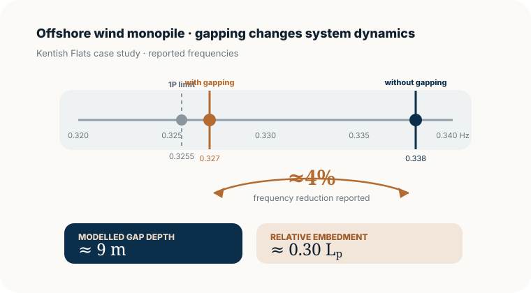
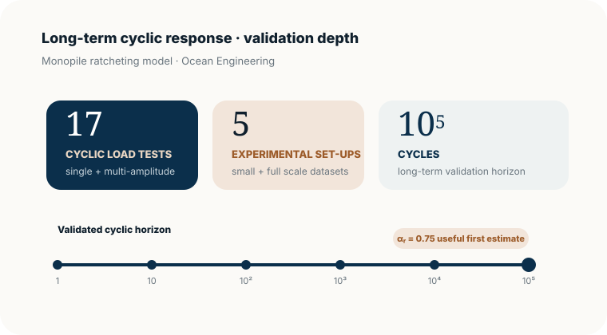
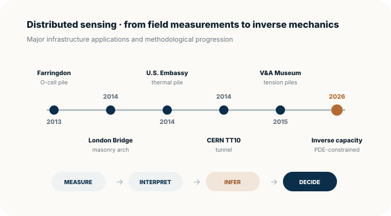
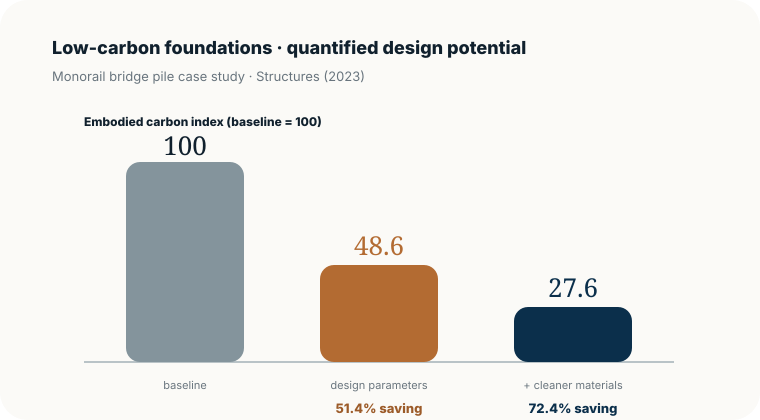

Marine & Offshore Infrastructure
Hydrodynamic loading, offshore wind monopiles, cyclic soil response, buried pipelines and monitoring-informed marine systems.
Marine & offshore infrastructure · Computational mechanics · Structural dynamics
Dr Loizos Pelecanos MEng (Hons) ACGI PhD DIC FHEA MIMarEST
Department of Architecture & Civil Engineering, University of Bath · Civil Engineer & Academic Researcher
Mechanics-led research on marine and offshore infrastructure, soil-structure interaction, earthquake engineering and structural health monitoring, combining nonlinear computation with field evidence, optimisation and data-driven methods.
About
Dr Loizos Pelecanos MEng (Hons) ACGI PhD DIC FHEA MIMarEST is a civil engineer and academic researcher specialising in computational mechanics and dynamics. He was appointed as a Lecturer in Civil Engineering in the Department of Architecture & Civil Engineering at the University of Bath in July 2016.
He studied Civil Engineering at Imperial College London, where he completed a PhD in Computational Earthquake Engineering, and subsequently worked at the University of Cambridge Centre for Smart Infrastructure and Construction.
His research connects nonlinear numerical modelling with field monitoring and experimental evidence, optimisation and data-driven methods, with applications spanning offshore and marine systems, foundations, dams, buildings, bridges and critical infrastructure.
Research
A common mechanics framework connects marine/offshore systems, geotechnics, dynamics, sensing, optimisation and data-driven engineering.
Full research programme →Hydrodynamic loading, offshore wind monopiles, cyclic soil response, buried pipelines and monitoring-informed marine systems.
Nonlinear finite-element analysis of soils, foundations, piles, dams and complex soil-structure interaction.
Dynamic response of dams, buildings, bridges and infrastructure; nonlinear time-history analysis, assessment and validation.
Distributed fibre-optic sensing, structural health monitoring, ambient vibration testing, inverse analysis and model updating.
Structural and foundation design optimisation, embodied carbon, reliability and lower-carbon infrastructure.
Surrogate models, inverse problems, physics-informed approaches and machine learning integrated with computational mechanics.
Evidence & impact
A compact evidence layer: quantitative offshore results, landmark field monitoring, low-carbon design impact and independently traceable research outputs.
Explore evidence & impact →
0.338 → 0.327 HzIncluding pile–soil gapping reduced the calculated natural frequency by about 4% in the Kentish Flats OWT case study, closely matching the measured reduction.

17 tests · 105 cyclesThe ratcheting model was assessed against 17 cyclic load tests across five experimental set-ups, reaching 100,000 cycles.

5 landmark sitesCERN, V&A Museum, U.S. Embassy London, London Bridge Station and Farringdon anchor a wider DFOS/SHM programme.

51.4% → 72.4%A reinforced-concrete pile case study reported 51.4% potential saving through design optimisation, rising to 72.4% when paired with cleaner materials.
Explore the programme
Focused pages bring together quantitative evidence, marine/offshore depth, field monitoring, selected projects and programme-building activity.
Evidence & impact
Data-backed offshore results, field evidence and selected contributions showing why the research matters.
Marine & offshore
A focused portfolio linking hydrodynamics, monopiles, buried infrastructure, monitoring and future coastal research.
Sensing & SHM
DFOS and monitoring work across tunnels, arches, deep foundations, energy piles and structural members.
Selected projects
Six project programmes spanning offshore wind, seismic monitoring, DFOS, net-zero foundations and optimisation.
Research leadership
The programme-building evidence behind the research: people, funding, professional service and impact.
Selected publications
Y. Yang, G.-B. Shin, L. Pelecanos, C. C. Wang, L. Luo & K. Soga
DFOSInverse analysisS. Williams, L. Pelecanos & A. Darby
DOI ↗S. A. Williams, L. Pelecanos & A. P. Darby
DOI ↗
Book · Infrastructure monitoring
A practical guide · ICE Publishing · 2016
Produced with Cedric Kechavarzi, Kenichi Soga, Nicholas de Battista, Mohammed Elshafie and Robert Mair, this practical guide brings together the principles, system design, installation, processing and engineering interpretation of distributed fibre-optic strain sensing for civil infrastructure.
It reflects a recurring theme of the wider research programme: linking high-resolution field measurements with mechanics-based interpretation and infrastructure decision-making.
Field sensing & SHM
Distributed fibre-optic sensing and structural-health-monitoring work has ranged from underground infrastructure and historic masonry to deep foundations, thermal piles and steel structural members.
Explore sensing & SHM portfolio →Long-term deformation monitoring of a concrete-lined tunnel using distributed fibre-optic sensing.
Distributed sensing of a masonry arch during nearby piling and construction activity.
Fibre-optic monitoring and long-term interpretation of tension-pile behaviour.
Thermo-mechanical response of an instrumented thermal pile.
Field monitoring and mechanics-based interpretation of thermo-mechanical pile response.
Distributed strain sensing applied to steel structural members and bridge-scale behaviour.
Academic path
Department of Architecture & Civil Engineering, University of Bath
Centre for Smart Infrastructure and Construction, University of Cambridge
Imperial College London
Imperial College London
Academic & professional service
Editorial Board Member
Computers & Geotechnics; Scientific Reports
Cyprus National Representative
CEN/TC 250/SC10/WG04 · Assessment and Retrofitting of Existing Structures
UK BDS Representative
ICOLD Technical Committee A · Computational Aspects of Analysis and Design of Dams
Member, IMarEST
Institute of Marine Engineering, Science & Technology
Invited Editor
Special Issue, Underground Space
Teaching & supervision
Teaching and supervision interests include finite-element analysis, earthquake engineering, geotechnical engineering, structural and soil dynamics, offshore engineering, marine structures, optimisation and reliability.
Contact
For research collaboration and academic enquiries, email Loizos or connect through the profiles above.